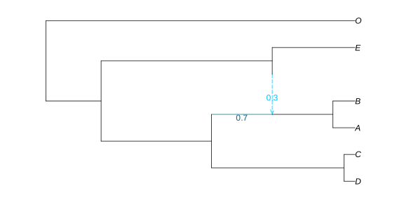

Continuous Trait Evolution
Once the network is inferred, we can take these species relationships into account when studying the distribution of quantitative traits measured for extant species. This is the goal of phylogenetic comparative methods (PCM). More details can be found on the developments below in Bastide et al. 2018 [B18]
We assume a fixed network, correctly rooted, with branch lengths proportional to calendar time. Here, we consider the true network that was used in the previous sections, and which is ultrametric (all the tips are contemporary).
truenet = readTopology("((((D:0.4,C:0.4):4.8,((A:0.8,B:0.8):2.2)#H1:2.2::0.7):4.0,(#H1:0::0.3,E:3.0):6.2):2.0,O:11.2);");HybridNetwork, Rooted Network 13 edges 13 nodes: 6 tips, 1 hybrid nodes, 6 internal tree nodes. tip labels: D, C, A, B, ... ((((D:0.4,C:0.4):4.8,((A:0.8,B:0.8):2.2)#H1:2.2::0.7):4.0,(#H1:0.0::0.3,E:3.0):6.2):2.0,O:11.2);
As previously, we can plot the network thanks to the RCall package. The name function is only instrumental here, to ensure that the figure is saved in the correct directory when the documentation is built. We only show the commands to actually save the plot in this first example for the interested reader, but we will hide those in the rest of the chapter, for the sake of clarity.
using PhyloPlots, RCall
R"name <- function(x) file.path('..', 'assets', 'figures', x)"
R"svg(name('truenet.svg'), width=8, height=4)"
R"par"(mar=[0,0,0,0])
plot(truenet, :R, useEdgeLength=true, showGamma=true);
R"dev.off()"
Model and Variance Matrix
Assuming that the network is known and that the continuous traits evolve like a Brownian Motion (BM) in time, it is possible to compute the expected variance covariance matrix between tip measurements. This can be done using function vcv, whose syntax is inspired from the well known corresponding ape function.
julia> C = vcv(truenet)
6×6 DataFrame
Row │ D C A B E O
│ Float64 Float64 Float64 Float64 Float64 Float64
─────┼──────────────────────────────────────────────────────
1 │ 11.2 10.8 4.8 4.8 2.0 0.0
2 │ 10.8 11.2 4.8 4.8 2.0 0.0
3 │ 4.8 4.8 8.596 7.796 3.86 0.0
4 │ 4.8 4.8 7.796 8.596 3.86 0.0
5 │ 2.0 2.0 3.86 3.86 11.2 0.0
6 │ 0.0 0.0 0.0 0.0 0.0 11.2The matrix is returned as a DataFrame, with columns named by the tips of the network to allow for easy identification. Each row also corresponds to a tip in the network, and rows are ordered in the same way as columns.
The computation of this matrix is based on the more general function sharedPathMatrix. It is at the core of all the Phylogenetic Comparative Methods described below.
Trait simulation
We start by generating continuous traits to study. We simulate three traits on the network (two independent, one dependent), using a Brownian Motion (BM) model of trait evolution on the network. We start by choosing the parameters of the BM (ancestral mean and variance), by creating objects of class ParamsBM<:ParamsProcess.
params_trait1 = ParamsBM( 2, 0.5) # BM with mean 2 and variance 0.5
params_trait2 = ParamsBM(-2, 1) # BM with mean -2 and variance 1.0We then simulate the independent traits according to these parameters, using function simulate (fixing the seed, for reproducibility).
using Random
Random.seed!(18480224);
sim1 = simulate(truenet, params_trait1) # simulate a BM on truenet
sim2 = simulate(truenet, params_trait2)This creates objects of class TraitSimulation, from which we can extract the data at the tips, thanks to the method getindex(::TraitSimulation, ::Symbol).
trait1 = sim1[:Tips] # trait 1 at the tips (data)
trait2 = sim2[:Tips]This extractor creates an Array with one column, and as many lines as the number of tips there are in the phylogeny. It is sorted in the same order as the tips of the phylogeny used to simulate it. If needed, we could also extract the simulated values at the internal nodes in the network:
sim1[:InternalNodes]Finally, we generate the last trait correlated with trait 1 (but not trait 2), with phylogenetic noise.
Random.seed!(18700904);
noise = simulate(truenet, ParamsBM(0, 0.1)) # phylogenetic residuals
trait3 = 10 .+ 2 * trait1 .+ noise[:Tips] # trait to study. independent of trait2Phylogenetic regression
Assume that we measured the three traits above, and that we wanted to study the impact of traits 1 and 2 on trait 3. To do that, we can perform a phylogenetic regression.
In order to avoid confusion, the function takes in a DataFrame, that has an extra column with the names of the tips of the network, labeled tipNames. Here, we generated the traits ourselves, so they are all in the same order.
julia> using DataFrames
julia> dat = DataFrame(trait1 = trait1, trait2 = trait2, trait3 = trait3,
tipNames = tipLabels(sim1))
6×4 DataFrame
Row │ trait1 trait2 trait3 tipNames
│ Float64 Float64 Float64 String
─────┼──────────────────────────────────────
1 │ 4.08298 -7.34186 16.673 D
2 │ 3.10782 -7.45085 15.0831 C
3 │ 2.17078 -3.32538 14.4522 A
4 │ 1.87333 -4.26472 13.9712 B
5 │ 2.8445 -5.96857 16.417 E
6 │ 5.88204 -1.99388 22.0269 OPhylogenetic regression / ANOVA is based on the GLM package, with the network as an extra argument, using function phylolm.
julia> using StatsModels # for statistical model formulas
julia> fitTrait3 = phylolm(@formula(trait3 ~ trait1 + trait2), dat, truenet)
StatsModels.TableRegressionModel{PhyloNetworkLinearModel, Matrix{Float64}}
Formula: trait3 ~ 1 + trait1 + trait2
Model: Brownian motion
Parameter Estimates, using REML:
phylogenetic variance rate: 0.0694239
Coefficients:
─────────────────────────────────────────────────────────────────────────
Coef. Std. Error t Pr(>|t|) Lower 95% Upper 95%
─────────────────────────────────────────────────────────────────────────
(Intercept) 11.9564 1.15462 10.36 0.0019 8.28185 15.6309
trait1 1.69111 0.183047 9.24 0.0027 1.10857 2.27365
trait2 0.170664 0.155645 1.10 0.3530 -0.324667 0.665996
─────────────────────────────────────────────────────────────────────────
Log Likelihood: -5.0405663051
AIC: 18.0811326103The REML criterion is used by default, for estimating the variance parameter(s). ML could be used instead with option reml=false. From this, we can see that the intercept, the coefficient for trait 1 and the variance of the noise are correctly estimated (given that there are only 6 taxa). In addition, the Student T test for the coefficient associated with trait 2 has a high p-value, which means that this coefficient is not significantly different from 0. This is consistent with the way we simulated trait 3.
The function returns an object of type PhyloNetworkLinearModel<:GLM.LinPredModel. It is a subtype of the GLM type LinPredModel, which means that all base functions from Julia StatsBase can be applied to it. See the documentation for this type for a list of all functions that can be used. Some functions allow the user to retrieve directly the estimated parameters of the BM, and are specific to this object.
julia> sigma2_phylo(fitTrait3) # estimated variance of the BM
0.06942391859612487
julia> mu_phylo(fitTrait3) # estimated root value of the BM
11.956367929622964Ancestral State Reconstruction
From known parameters
If we assume that we know the exact model of evolution that generated the traits, we can do ancestral trait reconstruction. Here, we simulated trait 1 ourselves, so we can use the true process, with the true parameters. In other words, we can reconstruct the state at the internal nodes, given the values at the tips, the known value at the root and the known BM variance.
ancTrait1 = ancestralStateReconstruction(truenet, trait1, params_trait1)Function ancestralStateReconstruction creates an object with type ReconstructedStates. Several extractors can be applied to it:
julia> expectations(ancTrait1) # predictions
13×2 DataFrame
Row │ nodeNumber condExpectation
│ Int64 Float64
─────┼─────────────────────────────
1 │ -5 3.55615
2 │ -7 2.08473
3 │ 5 2.42943
4 │ -4 2.61415
5 │ -8 2.56143
6 │ -3 2.26785
7 │ -2 2.0
8 │ 1 4.08298
9 │ 2 3.10782
10 │ 3 2.17078
11 │ 4 1.87333
12 │ 6 2.8445
13 │ 7 5.88204
julia> using StatsBase # for stderror(), aic(), likelihood() etc.
julia> stderror(ancTrait1) # associated standard errors
7-element Vector{Float64}:
0.3123387589010663
0.42993324936477556
0.812157499454507
0.9859957884856942
1.0099199358487552
0.8070424194592417
0.0
julia> predint(ancTrait1, level=0.9) # prediction interval (with level 90%)
13×2 Matrix{Float64}:
3.0424 4.0699
1.37755 2.79191
1.09355 3.76531
0.992327 4.23596
0.90026 4.2226
0.940384 3.59532
2.0 2.0
4.08298 4.08298
3.10782 3.10782
2.17078 2.17078
1.87333 1.87333
2.8445 2.8445
5.88204 5.88204We can plot the ancestral states or prediction intervals on the tree, using the nodeLabel argument of the plot function.
ancExpe = expectationsPlot(ancTrait1); # format expected ancestral states for the plot
plot(truenet, :R, nodeLabel = ancExpe);ancInt = predintPlot(ancTrait1) # format the prediction intervals for the plot
plot(truenet,:R, nodeLabel = ancInt);The predint and predintPlot functions have an optional argument to state the level of the prediction interval. If not given, the default value is 0.95.
It is also possible to plot both the reconstructed state and the predicted value on the same plot, using the optional keyword argument withExp. As shown below, we could also use the RCall method from the plot function.
plot(truenet, :R, nodeLabel = predintPlot(ancTrait1, withExp=true));These plots tend to be quite busy, even for small networks.
As we know the true ancestral states here, we can compare them to our estimation.
julia> predictions = DataFrame(infPred=predint(ancTrait1)[1:7, 1],
trueValue=sim1[:InternalNodes],
supPred=predint(ancTrait1)[1:7, 2])
7×3 DataFrame
Row │ infPred trueValue supPred
│ Float64 Float64 Float64
─────┼──────────────────────────────
1 │ 2.94398 2.74233 4.16832
2 │ 1.24207 2.24355 2.92738
3 │ 0.837628 1.38334 4.02123
4 │ 0.681629 1.50076 4.54666
5 │ 0.582023 2.84188 4.54084
6 │ 0.686076 1.76745 3.84962
7 │ 2.0 2.0 2.0From estimated parameters
In real applications though, we do not have access to the true parameters of the process that generated the data. We can estimate it using the previous function. To fit a regular BM, we just need to do a regression of trait 1 against a simple intercept:
fitTrait1 = phylolm(@formula(trait1 ~ 1), dat, truenet)We can then apply the ancestralStateReconstruction function directly to the fitted object:
ancTrait1Approx = ancestralStateReconstruction(fitTrait1)┌ Warning: These prediction intervals show uncertainty in ancestral values, │ assuming that the estimated variance rate of evolution is correct. │ Additional uncertainty in the estimation of this variance rate is │ ignored, so prediction intervals should be larger. └ @ PhyloNetworks ~/work/PhyloNetworks.jl/PhyloNetworks.jl/src/traits.jl:3359
The prediction intervals ignore the fact that we estimated the process parameters, so they are less accurate and the function throws a warning. The output is an object of the same ReconstructedStates type as earlier, and the same extractors can be applied to it:
plot(truenet, :R, nodeLabel = expectationsPlot(ancTrait1Approx));For convenience, the two steps described above (fitting against the intercept, and then do ancestral state reconstruction) can be done all at once with a single call of the function ancestralStateReconstruction on a DataFrame with the trait to reconstruct, and the tip labels:
datTrait1 = DataFrame(trait1 = trait1, tipNames = tipLabels(sim1))
ancTrait1Approx = ancestralStateReconstruction(datTrait1, truenet)┌ Warning: These prediction intervals show uncertainty in ancestral values, │ assuming that the estimated variance rate of evolution is correct. │ Additional uncertainty in the estimation of this variance rate is │ ignored, so prediction intervals should be larger. └ @ PhyloNetworks ~/work/PhyloNetworks.jl/PhyloNetworks.jl/src/traits.jl:3359
plot(truenet, :R, nodeLabel = predintPlot(ancTrait1Approx, level=0.9));This produces the exact same results. Here, we chose a level of 90% for the plotted prediction intervals.
Data imputation
Note that there is no theoretical difference between an internal node, for which we could not measure the value of the trait, and a missing value at a tip of the network. Consequently, the previous ancestralStateReconstruction function can be used to do data imputation. To see this, let's add some missing values in trait 1.
allowmissing!(datTrait1, :trait1)
datTrait1[2, :trait1] = missing; # second row: for taxon C
ancTrait1Approx = ancestralStateReconstruction(datTrait1, truenet)┌ Warning: These prediction intervals show uncertainty in ancestral values, │ assuming that the estimated variance rate of evolution is correct. │ Additional uncertainty in the estimation of this variance rate is │ ignored, so prediction intervals should be larger. └ @ PhyloNetworks ~/work/PhyloNetworks.jl/PhyloNetworks.jl/src/traits.jl:3359
plot(truenet, :R, nodeLabel = predintPlot(ancTrait1Approx));A prediction interval is shown for the missing values.
With known predictors
At this point, it might be tempting to apply this function to trait 3 we simulated earlier as a linear combination of trait 1 and a phylogenetic noise. However, this cannot be done directly:
ancTrait3 = ancestralStateReconstruction(fitTrait3) # Throws an error !This is because the model we used to fit the trait (a regression with one predictor and an intercept) is not compatible with the simple model of Brownian evolution that we assumed for the ancestral state reconstruction. As the predictor used is not known for ancestral states, it is not possible to reconstruct the trait for this particular model.
The only option we have is to provide the function with the predictor's ancestral states, if they are known. They are known indeed in this toy example that we generated ourselves, so we can reconstruct our trait doing the following:
ancTrait3 = ancestralStateReconstruction(fitTrait3,
[ones(7, 1) sim1[:InternalNodes] sim2[:InternalNodes]])┌ Warning: These prediction intervals show uncertainty in ancestral values, │ assuming that the estimated variance rate of evolution is correct. │ Additional uncertainty in the estimation of this variance rate is │ ignored, so prediction intervals should be larger. └ @ PhyloNetworks ~/work/PhyloNetworks.jl/PhyloNetworks.jl/src/traits.jl:3359
plot(truenet, :R, nodeLabel = predintPlot(ancTrait3));where we provided the ancestral predictors as a matrix, containing the intercept, and the known predictor at the nodes. The user must be very careful with this function, as no check is done for the order of the predictors, that must be in the same order as the internal nodes of the phylogeny. As ancestral predictors are often unknown, the use of this functionality is discouraged.
Phylogenetic ANOVA
The phylolm function is based on the lm function from GLM. This means that it inherits from most of its features, and in particular, it can handle formulas with factors or interactions. For example, in lizards, we might want to do a regression of toe length against body length and the region where each species is found, where this region is coded into 4 categories (say). We might also want to include an interaction effect between body length and region. (This model has no biological basis. It is just meant to show the possibilities of the function).
To illustrate the use of categorical predictors of particular interest in a network with reticulations, let's assume that some transgressive evolution took place after the hybridization event, so that tips "A" and "B" have larger mean compared to the others (see [B18] for transgressive evolution after a reticulation event).
delta = 5.0; # value of heterosis
underHyb = [(n == "A" || n == "B") for n in tipLabels(sim1)] # tips under hybrid
underHyb
for i in 1:length(trait3)
underHyb[i] && (trait3[i]+=delta) # add delta to tips A and B
endjulia> trait3 # changed: +5 was added by the previous loop to A and B
6-element Vector{Float64}:
16.672955360598753
15.083147195601445
19.45217792168757
18.971151761117035
16.41696746140128
22.026933970596104The categorical variable underHyb separates tips "A" and "B" from the others. We need to consider it as a factor, not a numerical variable. One way is to make it a vector of strings, as done below. An alternative way would be to add and use the CategoricalArrays package, then transform the column underHyb to be categorical (shown in commments).
dat = DataFrame(trait1 = trait1, trait2 = trait2, trait3 = trait3,
underHyb = string.(underHyb),
tipNames = tipLabels(sim1))
# using CategoricalArrays
# transform!(dat, :underHyb => categorical, renamecols=false)julia> dat
6×5 DataFrame
Row │ trait1 trait2 trait3 underHyb tipNames
│ Float64 Float64 Float64 String String
─────┼────────────────────────────────────────────────
1 │ 4.08298 -7.34186 16.673 false D
2 │ 3.10782 -7.45085 15.0831 false C
3 │ 2.17078 -3.32538 19.4522 true A
4 │ 1.87333 -4.26472 18.9712 true B
5 │ 2.8445 -5.96857 16.417 false E
6 │ 5.88204 -1.99388 22.0269 false ONow we can include this reticulation variable in the regression.
fitTrait = phylolm(@formula(trait3 ~ trait1 + underHyb), dat, truenet)StatsModels.TableRegressionModel{PhyloNetworkLinearModel, Matrix{Float64}}
Formula: trait3 ~ 1 + trait1 + underHyb
Model: Brownian motion
Parameter Estimates, using REML:
phylogenetic variance rate: 0.0969975
Coefficients:
──────────────────────────────────────────────────────────────────────────
Coef. Std. Error t Pr(>|t|) Lower 95% Upper 95%
──────────────────────────────────────────────────────────────────────────
(Intercept) 11.0616 1.19414 9.26 0.0027 7.2613 14.8619
trait1 1.72504 0.240787 7.16 0.0056 0.958748 2.49133
underHyb: true 5.07354 0.837326 6.06 0.0090 2.4088 7.73829
──────────────────────────────────────────────────────────────────────────
Log Likelihood: -4.026837654
AIC: 16.0536753079
In this case, the categorical variable indicating which tips are descendants of the reticulation event is indeed relevant, and the transgressive evolution effect is recovered.
This is a very simple example of how to include transgressive evolution, but some general functions to test for it, on networks with more than on hybrid, are also available.
Pagel's Lambda
One classical question about trait evolution is the amount of "phylogenetic signal" in a dataset, that is, the importance of the tree structure to explain variation in the observed traits. One way of doing measuring that is to use Pagel's lambda transformation of the branch lengths [P99]. This model assumes a BM on a tree where the internal branches are multiplied by a factor λ, while the external branches are modified so that the total height of the tree is constant. Hence, λ varies between 0 (the tree has no influence on the data) and 1 (the tree is unchanged). Using the same branch length transformations, this model can be straightforwardly extended to phylogenetic networks.
We can illustrate this with the predictor trait we used earlier. We use the same function as before, only indicating the model we want to use:
fitPagel = phylolm(@formula(trait1 ~ 1), dat, truenet, model="lambda")StatsModels.TableRegressionModel{PhyloNetworkLinearModel, Matrix{Float64}}
Formula: trait1 ~ 1
Model: Pagel's lambda
Parameter Estimates, using REML:
phylogenetic variance rate: 0.266819
Lambda: 0.937889
Coefficients:
──────────────────────────────────────────────────────────────────────
Coef. Std. Error t Pr(>|t|) Lower 95% Upper 95%
──────────────────────────────────────────────────────────────────────
(Intercept) 3.79713 0.99409 3.82 0.0124 1.24174 6.35252
──────────────────────────────────────────────────────────────────────
Log Likelihood: -8.4762824998
AIC: 22.9525649997
As it is indeed generated according to a plain BM on the phylogeny, the estimated λ should be close to 1. It can be extracted with function lambda_estim:
julia> lambda_estim(fitPagel)
0.9378885560873567For models in which the covariance is estimated, like Pagel's lambda, model comparisons should use a likelihood ratio test with the function lrtest, because the f-test (see below) is not applicable.
If the models being compared have different predictors, then models should be fit with maximum likelihood instead of the default REML criterion in order to do a likelihood ratio test: use option reml=false for this.
Shifts and transgressive evolution
In the ANOVA section above, we showed how to include transgressive evolution in a simple case. In general, transgressive evolution can be seen as a particular example of a shifted BM on the phylogenetic network.
Simulation of a Shifted BM
In a shifted BM, the trait evolves as a BM on the network most of the time, but shifts on some of the branches. The positions and values of the shifts can be stored in a ShiftNet object. For identifiability reasons, shifts are only allowed on tree-like branches. The position of the shifts can be given using vector of edges. To see this, let's first plot the network with its associated edges and node numbers.
plot(truenet, :R, useEdgeLength=true, showEdgeNumber=true);Let's say that we want to add a shift with value 5.0 on the branch directly following the hybridization event, in order to model transgressive evolution. We can see on the plot above that this branch is number 6, so we define the following object:
shift = ShiftNet(truenet.edge[6], 5.0, truenet)Note that the edge numbers and values of a ShiftNet object can be retrieved thanks to functions getShiftEdgeNumber and getShiftValue. The constructor can take a single edge and associated value, like here, or two vectors of edges and matching values.
Because we often need to put shifts only on edges right after hybrids, there is a special function shiftHybrid to do that, so that we do not have to find out their edges number. Here, the shift object could hence have been defined as:
shift = shiftHybrid(5.0, truenet)ShiftNet:
──────────────────────────
Edge Number Shift Value
──────────────────────────
6.0 5.0
──────────────────────────
The parameters for the simulation are then defined as above, just adding the ShiftNet object as a parameter.
params_sh = ParamsBM(2, 0.5, shift) # BM with mean 2, variance 0.5, and shifts.The traits are simulated using the same function simulate, and extracted at the tips as before.
Random.seed!(18700904)
sim_sh = simulate(truenet, params_sh) # simulate a shifted BM on truenet
trait_sh = sim_sh[:Tips] # trait at the tips (data)Fit of a Shifted BM
Let's assume that we measured trait_sh, and that we want to test whether there were some ancestral hybridizations. To do that, we can use the custom columns of the descendenceMatrix, that can be directly defined thanks to function regressorHybrid.
df_shift = regressorHybrid(truenet) # Regressors matching Hybrid ShiftsThis creates a dataframe, with as many columns as the number of hybrids in the network, each named according to the number of the edge after the hybrid. We can use this dataframe as regressors in the phylolm function.
dat = DataFrame(trait = trait_sh, tipNames = tipLabels(sim_sh)) # Data
dat = innerjoin(dat, df_shift, on=:tipNames) # join the two
fit_sh = phylolm(@formula(trait ~ shift_6), dat, truenet) # fitStatsModels.TableRegressionModel{PhyloNetworkLinearModel, Matrix{Float64}}
Formula: trait ~ 1 + shift_6
Model: Brownian motion
Parameter Estimates, using REML:
phylogenetic variance rate: 0.521847
Coefficients:
──────────────────────────────────────────────────────────────────────
Coef. Std. Error t Pr(>|t|) Lower 95% Upper 95%
──────────────────────────────────────────────────────────────────────
(Intercept) 1.7885 1.46856 1.22 0.2902 -2.28887 5.86586
shift_6 6.13121 1.73228 3.54 0.0240 1.32163 10.9408
──────────────────────────────────────────────────────────────────────
Log Likelihood: -7.3873100495
AIC: 20.774620099
Here, because there is only one hybrid in the network, we can directly see whether the ancestral transgressive evolution is significant or not thanks to the Student T test on the coefficient associated with shift_6. In more complex cases, it is possible to do a Fisher F test, thanks to the GLM function ftest.
fit_null = phylolm(@formula(trait ~ 1), dat, truenet) # fit against the null (no shift)
ftest(fit_sh, fit_null) # nested modelsF-test: 2 models fitted on 6 observations
─────────────────────────────────────────────────────────────────
DOF ΔDOF SSR ΔSSR R² ΔR² F* p(>F)
─────────────────────────────────────────────────────────────────
[1] 3 2.0874 0.6994
[2] 2 -1 8.6247 6.5373 -0.2419 -0.9413 12.5272 0.0240
─────────────────────────────────────────────────────────────────Here, this test is equivalent to the Fisher F test, and gives the same p-value.
Note that models need to be ordered by complexity, when given to ftest: either from most complex to most simple, or from most simple to most complex. In the output table, models are listed in the order in which they were given. If the most complex model is given first, as done above, the table lists the most complex H₁ (with shifts) first, and the null model H₀ is listed as the second model.
References
- B18Bastide, Solís-Lemus, Kriebel, Sparks, Ané (2018): Phylogenetic Comparative Methods for Phylogenetic Networks with Reticulations. Systematic Biology 67(5):800–820. doi:10.1093/sysbio/syy033
- P99Pagel M (1999). Inferring the historical patterns of biological evolution. Nature. 401: 877–884. doi:10.1038/44766